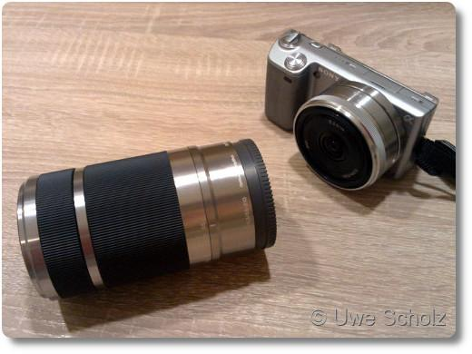

Kamera-Zubehör - Kann man das auch offline kaufen?
Seit einiger Zeit besitzen wir eine Sony-Systemkamera. Das ist etwas ähnliches wie eine Spiegelreflexkamera - zwar ohne Spiegel, aber mit auswechselbaren Objektiven. Für diese Kamera wollten wir uns schon länger ein richtiges Zoom-Objektiv und einen Weitwinkelkonverter(*) kaufen. Nach einigen Stunden Internetrecherche stand fest, welches Objektiv es werden soll. Beim Konverter hingegen gab es nur ein in Frage kommendes Modell.
3...2...1... Nicht gleich meins
In unserer kleinen Stadt Langen gibt es zwei Foto-Fachgeschäfte und ein Foto-Studio. Die Mission der drei besteht wohl in der Anfertigung von Passbildern, Bewerbungsfotos und Abschlussball-Fotos. Zumindest sagen das Schaufenster. Aber es gibt dort auch Hinweise auf bekannte Kamera-Marken wie Canon, Pentax, Leica oder Sony. „Einkaufen im Internet, das kann ja jeder“ dachten wir uns. Und so statteten wir dem ersten Geschäft einen Besuch ab, auf der Suche nach dem Objektiv und dem Konverter.
Man empfängt uns freundlich, nachdem die Dame vor uns ihr neues, gerahmtes Bild vom Ehemann(?) in Empfang genommen hat. Als wir unseren Wunsch nach einem neuen Zoom-Objektiv mit „der-und-der“ Brennweite und eines Konverters erklärt haben, setzt sich der Verkäufer an einen mitten im Laden stehenden PC, loggt sich ins Bestell-Portal seines Lieferanten ein und beginnt, in dessen Sony-Abteilung nach Objektiven für unsere Kamera zu stöbern.
„Hm... aha...hier...das könnte doch auch...“ zwischendurch murmelt er verschiedenste Zahlenkombinationen, während er das gesamte Zubehör für unsere Sony-Kamera durchwühlt. Irgendwie komme ich mir blöd vor, weil ich diese Sucherei ja schon zu Hause erledigt hatte...
Schließlich: „...oder?.... JAAA!“ Er dreht sich zu uns um und fährt fort: „Ein schönes Objektiv haben Sie sich ausgesucht, aber ich würde Ihnen eher das XY-Objektiv empfehlen. Das hat den Vorteil, dass Sie nicht so oft ihr Kameraobjektiv wechseln müssen, wenn sie unterschiedliche Situationen fotografieren wollen.“ Im Grunde hat er ja Recht, aber leider kostete sein Vorschlag etwa dreimal soviel, wie unser Favorit von etwa 300€. Wir blieben bei unserer Entscheidung...
Das Objektiv war bei seinem Großhändler tatsächlich bestellbar, der Weitwinkelkonverter jedoch nicht. Also verabschiedeten wir uns, nachdem wir das Objektiv bestellt hatten. Der Verkäufer gab uns sogar noch etwas Rabatt vom derzeitigen Listenpreis.
Nun auf zum zweiten Foto-Geschäft. Vielleicht lässt sich der Konverter ja hier bekommen. Aber nein. Obwohl uns der Verkäufer diesmal nicht von unserer Entscheidung abbringen wollte, konnte auch er den Konverter nicht mehr bestellen. Grund: „Lieferprobleme“.
Es ist schon seltsam, wie schnell die beiden Geschäfte eine Absage beim Konverter machten. Was ich mich hier fragte: Warum wird da nicht mit ein bisschen mehr Ehrgeiz bei andern Quellen gesucht? Liebe Händler, ich komme doch zu euch, um nicht selbst den ganzen Tag im Internet abzuhängen und den billigsten Preis zu suchen! Deswegen komme ich in eurer Geschäft: weil ich dort einkaufen will!
Nun gut. Da die beiden Geschäfte nicht in der Lage waren, den Weitwinkelkonverter zu besorgen, haben wir unsere Hoffnung begraben, ihn im dritten Geschäft zu bekommen. Das Wochenende verging und wir hatten uns immerhin schon auf unser neues Objektiv gefreut. Doch Pustekuchen! Am folgenden Montag erhielten wir einen Anruf vom ersten Foto-Geschäft, dass unser Objektiv doch nicht mehr lieferbar war. Argghhh! Der Mann am Telefon hat sich dabei noch unendlich oft entschuldigt, weil er ja erst noch eine Zusage gemacht hat. Ich fand das sehr nett, er konnte ja doch nichts dafür.
Schließlich ist das Ende der Geschichte, dass wir eine Woche später bei einer Filiale von www.kamera.de in Frankfurt/Main das Objektiv bestellt und abgeholt haben - einen Tag, bevor diese Filiale geschlossen wurde. Man sagte uns, dass das „Abenteuer Frankfurt“ für das aus Wiesbaden stammende Unternehmen leider vorbei ist. Schade. Den Weitwinkelkonverter haben wir bis heute nicht bekommen - denn den gibt's auch nicht mehr bei Amazon. Ha!
Und die Moral von der Geschicht'? Manchmal klappt's, und manchmal nicht...
(*) Wer sich fragt: Mit einem Weitwinkelkonverter bekommt man einen besonders großen Bereich vom Motiv auf's Foto. Man bringt ihn vor dem eigentlichen Objektiv der Kamera an.